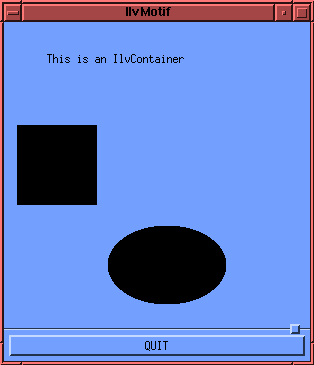
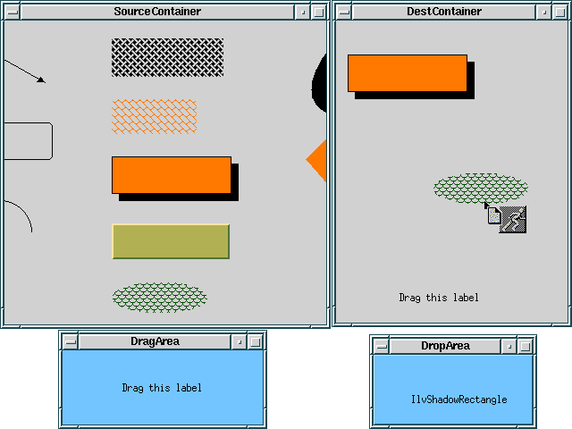
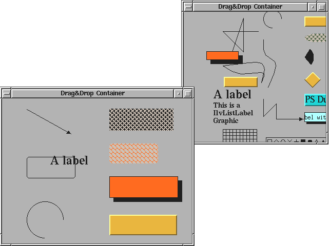

ilvmotifThis sample shows you how to create a Rogue Wave Views application on top of a Motif application.

A regular Motif DrawingArea gadget is created,
then a Rogue Wave Views IlvContainer is built using
this gadget.
A few objects are created to populate the container.
IlvDisplayIlvContainerdragdropDemonstration of Motif Drag-and-Drop from and to Rogue Wave Views.

To be able to build this sample, the Manager package
must be installed.
A specific subclass of IlvInteractor is defined
to enable the drag-and-drop from a Motif-based gadget.
Four windows are created:
IlvLabel is created.ILVOBJECT_Atom) to
specify that the drop source is a Rogue Wave Views object.
IlvContainerIlvInteractorsrc/dragdrop.cppsrc/ddmotif.cppinclude/ddmotif.hsrc/ddinter.cppinclude/ddinter.hsrc/ddpanels.cppinclude/ddpanels.hmultiddAnother demonstration of Motif drag-and-drop between two separated Rogue Wave Views applications.

To be able to build this sample, the Manager package
must be installed.
This sample is very similar to dragdrop, except
that it lets you drag objects from one application, and drop them
in another one.
Note that you will have to run two instances of the sample in
order to manipulate it.
IlvContainerIlvInteractorsrc/dragdrop.cppsrc/ddmotif.cppinclude/ddmotif.hsrc/ddinter.cppinclude/ddinter.hsrc/ddpanels.cppinclude/ddpanels.hscrollhkThis sample shows how to connect an
IlvManagerViewHook to a Motif
ScrolledWindow gadget.
The Grapher package must be installed to be able to build
this sample.
A ScrolledWindow gadget is created inside an
IlvView controlled by an IlvGrapher
through an IlvManagerViewHook.
The hook controls the gadget scrollbars.
On the other hand, callbacks are added to the scrollbars of
the Motif gadget to update the view hook attached to
it (see IlvScrollViewHook::initScrollBars).
IlvManageViewHook